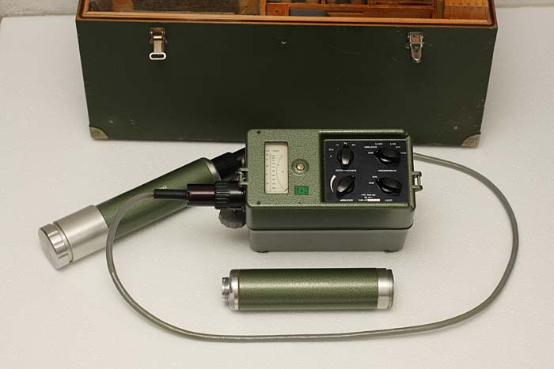
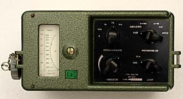
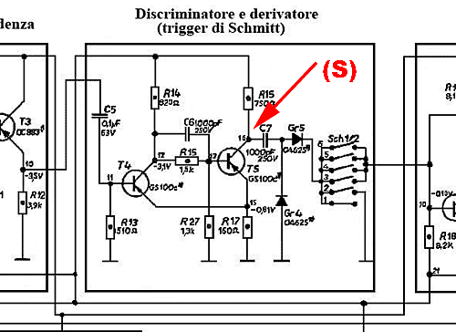

Radioactivity
Geiger Counter RAM 63
How to improve a good surplus instrument "Instrumentation" by R.Chirio
Page index

July 2009
This excellent instrument produced in Berlin, in the 1970s is very widespread among mineral research enthusiasts, it is still possible to buy it on the Surplus market.
The two scintillation tubes of the photomultiplier type allow reaching high sensitivity in reading radiation, of the Alpha, Beta and Gamma values.
The original circuit diagram provided for the use of 4 flashlight Ni-Cd batteries 4A + 1 additional battery for lighting the index scale. 
{kind=link}
To stabilize battery variations a rheostat was provided to be calibrated at each power-on, this to compensate for the voltage drop during battery discharge. It was an imprecise system, it is possible to improve this operation using a stable low dropout linear power supply and with zero noise.
The modifications made to this RAM63 unit involve:
- Use of only 4 flashlight batteries (type C) of 1.5V or 4 rechargeable Ni-Mh 1.2V
- Implementation of a power supply stage capable of delivering 4,00V output, with input supply range from 4,20 to 16V
- Replacement of filament lamp with a white LED.
- Elimination of the unreliable battery clamp.
- Improvement of overall ripple by adding capacitors.
- Signal pickup for Buzzer and signal output for acquisition system.
RAM 63 original diagrams
{kind=link}
Main diagram
{kind=link}
Probe diagram
{kind=link}
HV Inverter diagram
(only on latest versions)
Manual translated into Italian: http://www.danieleproietti.it/_radioactivity/doc/RAM63_manual_ita.pdf
Realization
Making the modifications requires knowledge of electronics, equipment and experience in electronic assembly is necessary.
No liability is accepted for damage to things and people and for improper use of the implementation.
Circuit diagram regulated power supply 4.00V 200mA
{kind=link}
The proposed circuit allows you to have an output voltage of 4.00V precisely adjustable via the R1 trimmer which must be Cermet 10-turn type. All resistors must be 1/8W metal film 1%.
Switch S1 is the general rotary switch of the RAM that interrupts the positive to ground.
The proposed MOSFET is not critical, all types of logic-level command MOSFET work fine, 60V working voltage and 3A current. The MOSFET is soldered directly to the CS, in case of input voltages greater than 6V it should be mounted on a small heatsink.
The output voltage must be calibrated to 4.00V by reading the value on the HV inverter input as explained below. The secondary voltage from the HV inverter must be 9.0V; otherwise adjust the internal trimmer of the HV inverter to get the correct value.
Outside the circuit the new connection for illuminating the instrument scale via white LED is visible; potentiometer R9 rated 100 ohm allows varying the LED brightness. In this case the LED's nominal current is 60mA equivalent to three SMD LEDs in parallel. Switch S2 is the original one for turning on the lamp, as is the potentiometer the original one for calibrating the battery value.
Battery terminal block
The battery terminal strip may have oxidation and cause voltage drops, it should be removed completely, in its place two red/black wires 0.25 mm² will be soldered protected by a sheath.
{kind=link}
Battery holder
Here's how the battery holder looks with just 4 elements. The cable with sheath comes directly from the main switch and from the common negative.
It's all simpler and more reliable.
For convenience it is possible to use a male/female connector to interrupt the battery pack connection.
Whoever wants to drastically reduce the weight of the instrument can eliminate the heavy battery pack and battery holder entirely, and adopt a plastic battery case and use 4 good quality AA cells. The battery case can be fixed to the bottom of the Ram using velcro. 4 AA cells provide a runtime of over 50 hours.
{kind=link}
LED lighting
Here the SMD LED mounted in place of the 1.5V light bulb.
In this case the LED contains three elements that must be soldered in parallel.
The LED should be positioned in the center where the bulb was.
You can also put one or two traditional 5mm LEDs.
The resistors can also be mounted externally on the power supply path.
{kind=link}
Lit staircase
Now the staircase is illuminated by strong white light, clearly visible even in daylight.
It is possible to mount two LEDs spaced apart for better light distribution, and you can also put green or blue LEDs to give a more professional appearance...
{kind=link}
Power supply 4V
The finished power supply, compact and small in size.
You must glue an isolated L-bracket to fix it to the screws of the intermediate board. The position is possible below the flange of the tuning trimmers.
Or it can also be placed in the unused 5th battery compartment.
{kind=link}
Here we see the Mosfet placed directly on the copper traces which also act as a heatsink.
With 53mA current draw at 6V the dissipation is very low and there are no heating problems.
{kind=link}
Partial view of the power supply positioned under the trimmers, on the right the shielded high voltage inverter unit
{kind=link}
Main printed circuit board, raised, you can see the 3300 µF capacitor mounted between ground and the 6 V negative, it helps remove noise present on the power supply, but it's not essential.
{kind=link}
HV Inverter
Inside the shielded group we find the voltage multiplier circuit that provides 1250V to operate the scintillation tube.
It is not possible to measure HV voltage with traditional instruments, a voltmeter with very high input impedance is required.
For HV measurement see my very high impedance Voltmeter project.
{kind=link}
This is the low voltage section of the inverter.
The -4.0V enters from the blue wire and the -9 V exits from the yellow, black is ground.
On the left is the trimmer for adjusting 9V and also 1250V. Turn it slowly with great care.
{kind=link}
Probe connection cable
Unfortunately the probe connection cable is a problem.
It is large in diameter and very rigid, the fact of moving it often tends to make the solder point of the various cables jump.
You can restore the connection with a piece of flexible cable soldered to form a small loop.
Insulate everything with heat shrink tubing.
Take particular care with the central cable which represents HV.
{kind=link}
Buzzer signal output

(S) this is the best point to extract the signal to amplify, whether to apply it to the piezoelectric Buzzer or to the external counter.
A high impedance follower circuit must be used to not affect the signal at the sampling point.
....
....
CDV software: http://www.anythingradioactive.com/CDVCounter/help.html
This is a very useful program that converts the output pulses from Geiger counters (taken from the buzzer or headphone socket) into a graph showing the average values read over time. You can set very long times to verify weak variations in radiation values. The Help file is included with the program.
Calibration
It is useful to mount two 47uF 16V Tantalum capacitors directly on the cables coming from the HV inverter. With this modification, the ripple present on the 9V changes from 150mV to about 20mV, a more than good value for not introducing noise.
Power the RAM 63 by connecting the Beta/Gamma probe.
Measure on the Black (+) and Blue (-) cable terminals the value of 4,00V by adjusting the trimmer R1 on the 4V power supply.
Verify that between the Black cable (+) and Yellow cable (-) there is at least 9.0V
With the main switch on the first position (ABGLEICH) verify that the needle is in the red mark zone, if not adjust trimmer R25 to center the needle on the red mark, the RAM 63 must be in horizontal position, resting on a plane.
The R1 and R6 trimmers are used to calibrate the probes, you need to have a calibrated emission source, or send a precise square wave signal, otherwise avoid touching them.
{kind=link}
{kind=link}
Final thoughts
With these simple modifications the RAM should be much more stable and with 4 AA cells the operating duration is very long; the initial calibration is no longer necessary. When the needle no longer reaches the red mark, it means the batteries are dead.
The best measurements are made with the probe fixed on its support and the samples are placed under the probe in the sample holder.
Because of the weight and the index needle that is a bit wobbly, it is not a suitable instrument to be carried in a mine, it is better to use it as a fixed analysis instrument resting on a surface (table).
To reduce weight I recommend adopting for the power supply only 4 good-brand AA cells, eliminating the entire metal group of the original battery holder.
Always useful the notes of Prof. Andrea Bosi on radioactivity and Geiger:
http://spazioinwind.libero.it/andrea_bosi/index.htm
© Roberto Chirio: all rights reserved.